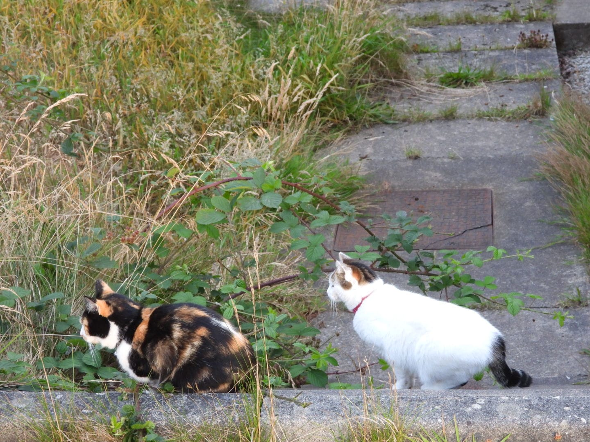
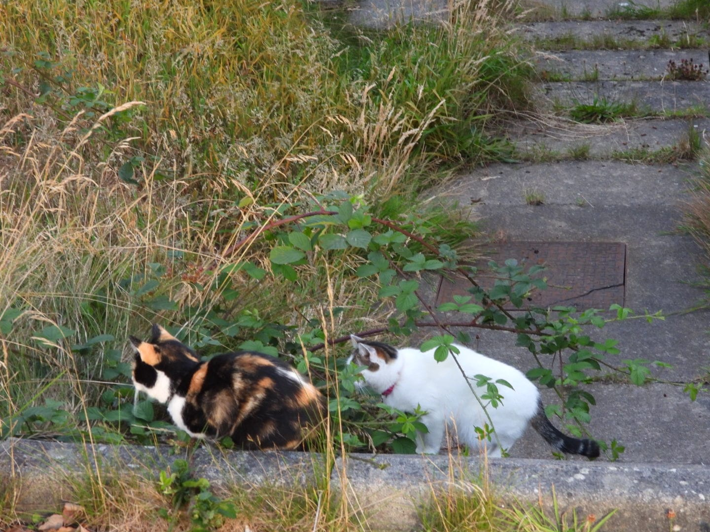

Znów ryjówka?
Znów ryjówka?
Znów ryjówka?
 Nie, tym razem nornica.
 Są lepsze od ryjówek.
 Skąd wiesz, że ryjówki są jadowite?
Skąd wiesz, że ryjówki są jadowite?
 Czytałam na wikipedii. Ale nie można zawsze jej ufać.
Czytałam na wikipedii. Ale nie można zawsze jej ufać.
 Czemu?
Czemu?
 Na przykład, jest tam napisane, że domowe koty zawsze polują samotnie.
Na przykład, jest tam napisane, że domowe koty zawsze polują samotnie.
To bzdura.
 Nawet cytują artykuł naukowy na ten temat.
Nawet cytują artykuł naukowy na ten temat.